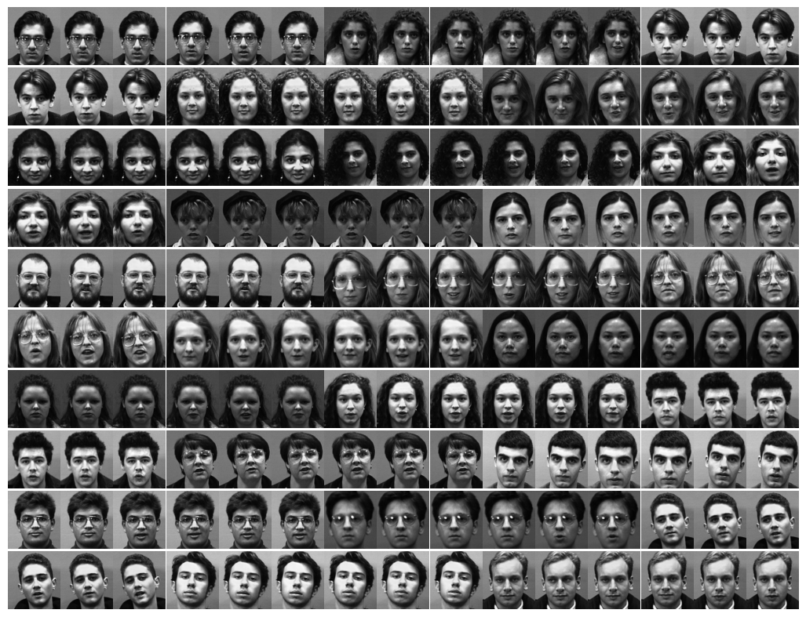
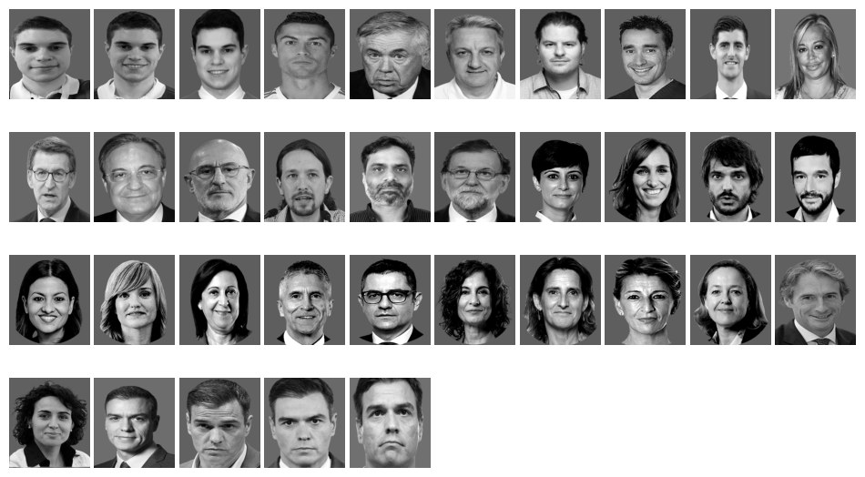

Facial Recognition#
Requirements#
import sys
import os
from PIL import Image
import polars as pl
import pandas as pd
import numpy as np
import matplotlib.pyplot as plt
from itertools import product
from sklearn.model_selection import train_test_split
from itertools import product
import joblib
from sklearn.preprocessing import StandardScaler
from sklearn.metrics import accuracy_score, confusion_matrix, ConfusionMatrixDisplay
from FacialRecognition import FacialRecognitionKnn, RandomSearchFacialRecognitionKnn, FacialRecognitionKnnPca, RandomSearchFacialRecognitionKnnPca, FacialRecognitionKnnPcaFisher, RandomSearchFacialRecognitionKnnPcaFisher
def load_images(folder, image_size=None, convert_to_gray=True, output='numpy'):
# image_size = (width, height)
images_list = []
for filename in os.listdir(folder):
if filename.endswith('.jpg') or filename.endswith('.png') or filename.endswith('.jpeg'):
img = Image.open(os.path.join(folder, filename))
if image_size == None :
image_size = img.size
img = img.resize(image_size)
if convert_to_gray == True :
img = img.convert('L') # Convert to grayscale
img_array = np.array(img)
img_vector = img_array.flatten() # image as an observation (1D array)
images_list.append(img_vector)
images_array = np.array(images_list)
if output == 'numpy' :
images_dataset = images_array
elif output == 'polars' :
width = image_size[0]
height = image_size[1]
images_dataset = pl.DataFrame(images_array)
if convert_to_gray == True :
images_dataset.columns = [f'pixel_{i}_{j}' for i in range(1,height+1) for j in range(1,width+1)]
else :
x = list()
for (i,j) in product(range(1,height+1), range(1,width+1)) :
x = x + [f'{channel}_{i}_{j}' for channel in ['R', 'G', 'B']]
images_dataset.columns = x
return images_dataset
Data#
Images of people of our database (IN people)#
folder = r"C:\Users\fscielzo\Documents\Large-Data\Face_Recognition_Data\IN_images"
X_IN = load_images(folder=folder, image_size=(180,200), convert_to_gray=True, output='numpy')
n_images_per_person = 6
n_people_db = 25
Y_IN = np.array([])
for i in range(1, n_people_db+1) :
arr = np.repeat(i, n_images_per_person)
Y_IN = np.concatenate((Y_IN, arr))
n_images = len(X_IN)
height = 200
width = 180
# This is critical, if it is incorrect, images will be distorted.
image_size = (height, width)
n_cols = 15
n_rows = int(np.ceil(n_images/n_cols))
fig, axes = plt.subplots(n_rows, n_cols, figsize=(13, 10))
axes = axes.flatten()
for i in range(n_images):
image_vector = X_IN[i, :]
reshaped_image = image_vector.reshape(image_size)
axes[i].imshow(reshaped_image, cmap='gray')
axes[i].axis('off')
plt.subplots_adjust(hspace=0.01, wspace=0.01)
for j in range(n_images, n_rows * n_cols):
fig.delaxes(axes[j])
plt.show()

Images of external people (OUT people)#
folder = r"C:\Users\fscielzo\Documents\Large-Data\Face_Recognition_Data\OUT_Images"
X_OUT = load_images(folder=folder, image_size=(180,200), convert_to_gray=True, output='numpy')
Y_OUT = np.repeat(0, len(X_OUT))
n_images = len(X_OUT)
height = 200
width = 180
image_size = (height, width)
n_cols = 10
n_rows = int(np.ceil(n_images/n_cols))
fig, axes = plt.subplots(n_rows, n_cols, figsize=(12, 7))
axes = axes.flatten()
for i in range(n_images):
image_vector = X_OUT[i, :]
reshaped_image = image_vector.reshape(image_size)
axes[i].imshow(reshaped_image, cmap='gray')
axes[i].axis('off')
plt.subplots_adjust(hspace=0.01, wspace=0.05)
for j in range(n_images, n_rows * n_cols):
fig.delaxes(axes[j])
plt.show()

OUT people:
45 images of 39 people (one person has 3 images, another 4, and the rest 1).
Train-Validate-Test split#
X_IN_train, X_IN_test, Y_IN_train, Y_IN_test = train_test_split(X_IN, Y_IN, train_size=0.80, random_state=123, stratify=Y_IN)
X_IN_val, X_IN_test, Y_IN_val, Y_IN_test = train_test_split(X_IN_test, Y_IN_test, train_size=0.50, random_state=123)
X_OUT_val, X_OUT_test, Y_OUT_val, Y_OUT_test = train_test_split(X_OUT, Y_OUT, train_size=0.50, random_state=123)
X_val, Y_val = np.concatenate((X_IN_val, X_OUT_val)), np.concatenate((Y_IN_val, Y_OUT_val))
X_test, Y_test = np.concatenate((X_IN_test, X_OUT_test)), np.concatenate((Y_IN_test, Y_OUT_test))
# Number of images
n = len(X_IN) + len(X_OUT)
n
185
# Proportion of train images
len(X_IN_train) / n
0.6486486486486487
# Proportion of validate images
len(X_val) / n
0.17297297297297298
# Proportion of test images
len(X_test) / n
0.1783783783783784
# Proportion of IN images in validate set
np.mean(Y_val != 0)
0.46875
# Proportion of OUT images in validate set
np.mean(Y_val == 0)
0.53125
# Proportion of IN images in test set
np.mean(Y_test != 0)
0.45454545454545453
# Proportion of OUT images in test set
np.mean(Y_test == 0)
0.5454545454545454
Face Recognition - KKN Algorithm#
Testing the functionality of the algorithm#
facial_recognition_knn = FacialRecognitionKnn(n_neighbors=5, metric='euclidean', threshold_dist=0)
facial_recognition_knn.fit(X_IN_train, Y_IN_train)
Y_val_hat = facial_recognition_knn.predict(X_val)
Y_val
array([17., 19., 12., 16., 23., 7., 6., 24., 5., 22., 15., 2., 7.,
3., 4., 0., 0., 0., 0., 0., 0., 0., 0., 0., 0., 0.,
0., 0., 0., 0., 0., 0.])
Y_val_hat
array([0, 0, 0, 0, 0, 0, 0, 0, 0, 0, 0, 0, 0, 0, 0, 0, 0, 0, 0, 0, 0, 0,
0, 0, 0, 0, 0, 0, 0, 0, 0, 0])
# General accuracy
accuracy_score(y_pred=Y_val_hat, y_true=Y_val)
0.53125
# Accuracy for IN images
accuracy_score(y_pred=Y_val_hat[np.where(Y_val != 0)], y_true=Y_val[np.where(Y_val != 0)])
0.0
# Accuracy for OUT images
accuracy_score(y_pred=Y_val_hat[np.where(Y_val == 0)], y_true=Y_val[np.where(Y_val == 0)])
1.0
Hyperparameter tunning#
param_grid = dict()
param_grid['n_neighbors'] = range(1, 30)
param_grid['metric'] = ['euclidean','cosine','cityblock','manhattan']
param_grid['threshold_dist'] = np.arange(0, 10000, 100)
FR_knn_random_search = RandomSearchFacialRecognitionKnn(param_grid=param_grid, n_trials=40, random_state=123)
FR_knn_random_search.fit(X_train=X_IN_train, Y_train=Y_IN_train, X_test=X_val, Y_test=Y_val)
FR_knn_random_search_results = FR_knn_random_search.results
FR_knn_random_search_results
| combination | accuracy | accuracy_IN | accuracy_OUT | n_neighbors | metric | threshold_dist | |
|---|---|---|---|---|---|---|---|
| 0 | (3, euclidean, 5700) | 1.000 | 1.000 | 1.0 | 3 | euclidean | 5700 |
| 35 | (6, euclidean, 6800) | 1.000 | 1.000 | 1.0 | 6 | euclidean | 6800 |
| 12 | (3, euclidean, 5000) | 1.000 | 1.000 | 1.0 | 3 | euclidean | 5000 |
| 30 | (5, euclidean, 7100) | 1.000 | 1.000 | 1.0 | 5 | euclidean | 7100 |
| 21 | (1, euclidean, 2700) | 0.938 | 0.867 | 1.0 | 1 | euclidean | 2700 |
| 19 | (11, euclidean, 1600) | 0.656 | 0.267 | 1.0 | 11 | euclidean | 1600 |
| 36 | (1, manhattan, 4700) | 0.531 | 0.000 | 1.0 | 1 | manhattan | 4700 |
| 37 | (12, manhattan, 8000) | 0.531 | 0.000 | 1.0 | 12 | manhattan | 8000 |
| 34 | (6, manhattan, 2900) | 0.531 | 0.000 | 1.0 | 6 | manhattan | 2900 |
| 32 | (4, manhattan, 1900) | 0.531 | 0.000 | 1.0 | 4 | manhattan | 1900 |
| 31 | (2, manhattan, 1900) | 0.531 | 0.000 | 1.0 | 2 | manhattan | 1900 |
| 18 | (29, cityblock, 9600) | 0.531 | 0.000 | 1.0 | 29 | cityblock | 9600 |
| 28 | (13, manhattan, 6800) | 0.531 | 0.000 | 1.0 | 13 | manhattan | 6800 |
| 26 | (3, manhattan, 4400) | 0.531 | 0.000 | 1.0 | 3 | manhattan | 4400 |
| 38 | (18, cityblock, 5500) | 0.531 | 0.000 | 1.0 | 18 | cityblock | 5500 |
| 23 | (4, cityblock, 3500) | 0.531 | 0.000 | 1.0 | 4 | cityblock | 3500 |
| 22 | (18, manhattan, 4700) | 0.531 | 0.000 | 1.0 | 18 | manhattan | 4700 |
| 1 | (11, manhattan, 8500) | 0.531 | 0.000 | 1.0 | 11 | manhattan | 8500 |
| 20 | (7, cityblock, 8300) | 0.531 | 0.000 | 1.0 | 7 | cityblock | 8300 |
| 17 | (14, cityblock, 6800) | 0.531 | 0.000 | 1.0 | 14 | cityblock | 6800 |
| 15 | (14, manhattan, 2400) | 0.531 | 0.000 | 1.0 | 14 | manhattan | 2400 |
| 14 | (6, cityblock, 1200) | 0.531 | 0.000 | 1.0 | 6 | cityblock | 1200 |
| 13 | (7, cityblock, 1500) | 0.531 | 0.000 | 1.0 | 7 | cityblock | 1500 |
| 2 | (4, cityblock, 2800) | 0.531 | 0.000 | 1.0 | 4 | cityblock | 2800 |
| 3 | (17, cityblock, 7200) | 0.531 | 0.000 | 1.0 | 17 | cityblock | 7200 |
| 11 | (14, manhattan, 8300) | 0.531 | 0.000 | 1.0 | 14 | manhattan | 8300 |
| 10 | (14, cityblock, 4200) | 0.531 | 0.000 | 1.0 | 14 | cityblock | 4200 |
| 16 | (23, manhattan, 9000) | 0.531 | 0.000 | 1.0 | 23 | manhattan | 9000 |
| 9 | (24, euclidean, 1300) | 0.531 | 0.000 | 1.0 | 24 | euclidean | 1300 |
| 8 | (22, manhattan, 8500) | 0.531 | 0.000 | 1.0 | 22 | manhattan | 8500 |
| 7 | (16, cityblock, 1100) | 0.531 | 0.000 | 1.0 | 16 | cityblock | 1100 |
| 4 | (11, manhattan, 6700) | 0.531 | 0.000 | 1.0 | 11 | manhattan | 6700 |
| 6 | (2, cityblock, 2500) | 0.531 | 0.000 | 1.0 | 2 | cityblock | 2500 |
| 5 | (5, cosine, 6400) | 0.469 | 1.000 | 0.0 | 5 | cosine | 6400 |
| 27 | (1, cosine, 800) | 0.469 | 1.000 | 0.0 | 1 | cosine | 800 |
| 39 | (24, cosine, 9400) | 0.250 | 0.533 | 0.0 | 24 | cosine | 9400 |
| 25 | (16, cosine, 8600) | 0.250 | 0.533 | 0.0 | 16 | cosine | 8600 |
| 24 | (25, cosine, 9100) | 0.219 | 0.467 | 0.0 | 25 | cosine | 9100 |
| 29 | (19, cosine, 4500) | 0.219 | 0.467 | 0.0 | 19 | cosine | 4500 |
| 33 | (28, cosine, 3000) | 0.188 | 0.400 | 0.0 | 28 | cosine | 3000 |
FR_knn_random_search.best_params_
{'n_neighbors': 3, 'metric': 'euclidean', 'threshold_dist': 5700}
FR_knn_random_search.best_score_
1.0
Estimation of future performance#
best_facial_recognition_knn = FacialRecognitionKnn()
best_facial_recognition_knn.set_params(**FR_knn_random_search.best_params_)
best_facial_recognition_knn.fit(X_IN_train, Y_IN_train)
Y_test_hat = best_facial_recognition_knn.predict(X_test)
accuracy_score(y_pred=Y_test_hat, y_true=Y_test)
1.0
Pre-trained algorithm#
Saving the pre-trained model:
joblib.dump(best_facial_recognition_knn, "facial_recognition_knn.joblib")
['facial_recognition_knn.joblib']
Loading the pre-trained model
pretrained_model = joblib.load("facial_recognition_knn.joblib")
Loading new images:
folder = r"C:\Users\fscielzo\Documents\Large-Data\Face_Recognition_Data\New_image"
X_new = load_images(folder=folder, image_size=(180,200), convert_to_gray=True, output='numpy')
X_new_1 = X_new[0,:]
# X_new_1 is an IN person image. Concretely is the person 3 of our initial IN images data base.
Y_new_1 = 3
X_new_2 = X_new[1,:]
# X_new_2 is an OUT person image.
fig, axes = plt.subplots(figsize=(3, 2))
reshaped_image = X_new_1.reshape(image_size)
plt.imshow(reshaped_image, cmap='gray')
plt.axis('off')
plt.show()
Y_new_1_hat = pretrained_model.predict(X_new_1.reshape(1, -1))
Y_new_1_hat
array([3])
Y_new_1
3
fig, axes = plt.subplots(figsize=(3, 2))
reshaped_image = X_new_2.reshape(image_size)
plt.imshow(reshaped_image, cmap='gray')
plt.axis('off')
plt.show()
Y_new_2_hat = pretrained_model.predict(X_new_2.reshape(1, -1))
Y_new_2_hat
array([0])
Face Recognition - PCA-KKN Algorithm#
Testing the functionality of the algorithm#
facial_recognition_knn_pca = FacialRecognitionKnnPca(n_neighbors=5, metric='euclidean', n_components=3, threshold_dist=0)
facial_recognition_knn_pca.fit(X_IN_train, Y_IN_train)
Y_val_hat = facial_recognition_knn_pca.predict(X_val)
Y_val
array([17., 19., 12., 16., 23., 7., 6., 24., 5., 22., 15., 2., 7.,
3., 4., 0., 0., 0., 0., 0., 0., 0., 0., 0., 0., 0.,
0., 0., 0., 0., 0., 0.])
Y_val_hat
array([0, 0, 0, 0, 0, 0, 0, 0, 0, 0, 0, 0, 0, 0, 0, 0, 0, 0, 0, 0, 0, 0,
0, 0, 0, 0, 0, 0, 0, 0, 0, 0])
# General accuracy
accuracy_score(y_pred=Y_val_hat, y_true=Y_val)
0.53125
# Accuracy for IN images
accuracy_score(y_pred=Y_val_hat[np.where(Y_val != 0)], y_true=Y_val[np.where(Y_val != 0)])
0.0
# Accuracy for OUT images
accuracy_score(y_pred=Y_val_hat[np.where(Y_val == 0)], y_true=Y_val[np.where(Y_val == 0)])
1.0
Hyperparameter tunning#
param_grid = dict()
param_grid['metric'] = ['euclidean','cosine','cityblock','manhattan']
param_grid['n_components'] = np.arange(1, 60, 3)
param_grid['threshold_dist'] = np.arange(0, 500, 5)
param_grid['n_neighbors'] = range(1, 30)
FR_knn_pca_random_search = RandomSearchFacialRecognitionKnnPca(param_grid=param_grid, n_trials=50, random_state=123)
FR_knn_pca_random_search.fit(X_train=X_IN_train, Y_train=Y_IN_train, X_test=X_val, Y_test=Y_val)
FR_knn_pca_random_search.results
| combination | accuracy | accuracy_IN | accuracy_OUT | metric | n_components | threshold_dist | n_neighbors | |
|---|---|---|---|---|---|---|---|---|
| 12 | (cityblock, 31, 415, 2) | 1.000 | 1.000 | 1.000 | cityblock | 31 | 415 | 2 |
| 48 | (cityblock, 10, 55, 4) | 1.000 | 1.000 | 1.000 | cityblock | 10 | 55 | 4 |
| 35 | (manhattan, 19, 85, 7) | 1.000 | 1.000 | 1.000 | manhattan | 19 | 85 | 7 |
| 29 | (manhattan, 58, 210, 10) | 0.906 | 0.800 | 1.000 | manhattan | 58 | 210 | 10 |
| 47 | (cityblock, 34, 415, 9) | 0.906 | 0.800 | 1.000 | cityblock | 34 | 415 | 9 |
| 37 | (euclidean, 28, 110, 11) | 0.812 | 0.600 | 1.000 | euclidean | 28 | 110 | 11 |
| 7 | (manhattan, 46, 395, 18) | 0.719 | 0.400 | 1.000 | manhattan | 46 | 395 | 18 |
| 43 | (manhattan, 34, 205, 24) | 0.688 | 0.333 | 1.000 | manhattan | 34 | 205 | 24 |
| 20 | (cityblock, 31, 350, 23) | 0.688 | 0.333 | 1.000 | cityblock | 31 | 350 | 23 |
| 27 | (manhattan, 28, 460, 24) | 0.656 | 0.267 | 1.000 | manhattan | 28 | 460 | 24 |
| 18 | (euclidean, 37, 100, 25) | 0.656 | 0.267 | 1.000 | euclidean | 37 | 100 | 25 |
| 11 | (cityblock, 25, 230, 29) | 0.625 | 0.200 | 1.000 | cityblock | 25 | 230 | 29 |
| 3 | (manhattan, 28, 250, 28) | 0.625 | 0.200 | 1.000 | manhattan | 28 | 250 | 28 |
| 22 | (manhattan, 10, 210, 26) | 0.594 | 0.267 | 0.882 | manhattan | 10 | 210 | 26 |
| 8 | (manhattan, 58, 35, 28) | 0.531 | 0.000 | 1.000 | manhattan | 58 | 35 | 28 |
| 15 | (manhattan, 52, 10, 12) | 0.531 | 0.000 | 1.000 | manhattan | 52 | 10 | 12 |
| 30 | (cityblock, 43, 5, 29) | 0.531 | 0.000 | 1.000 | cityblock | 43 | 5 | 29 |
| 31 | (cosine, 43, 65, 8) | 0.469 | 1.000 | 0.000 | cosine | 43 | 65 | 8 |
| 23 | (cosine, 7, 80, 5) | 0.469 | 1.000 | 0.000 | cosine | 7 | 80 | 5 |
| 41 | (euclidean, 37, 425, 6) | 0.469 | 1.000 | 0.000 | euclidean | 37 | 425 | 6 |
| 19 | (cosine, 31, 240, 8) | 0.469 | 1.000 | 0.000 | cosine | 31 | 240 | 8 |
| 17 | (euclidean, 43, 215, 8) | 0.469 | 1.000 | 0.000 | euclidean | 43 | 215 | 8 |
| 16 | (euclidean, 13, 345, 5) | 0.469 | 1.000 | 0.000 | euclidean | 13 | 345 | 5 |
| 42 | (euclidean, 34, 205, 7) | 0.469 | 1.000 | 0.000 | euclidean | 34 | 205 | 7 |
| 10 | (cosine, 43, 135, 3) | 0.469 | 1.000 | 0.000 | cosine | 43 | 135 | 3 |
| 4 | (cosine, 49, 405, 7) | 0.469 | 1.000 | 0.000 | cosine | 49 | 405 | 7 |
| 2 | (euclidean, 22, 440, 4) | 0.469 | 1.000 | 0.000 | euclidean | 22 | 440 | 4 |
| 0 | (euclidean, 13, 365, 10) | 0.406 | 0.867 | 0.000 | euclidean | 13 | 365 | 10 |
| 25 | (euclidean, 1, 75, 3) | 0.406 | 0.867 | 0.000 | euclidean | 1 | 75 | 3 |
| 49 | (cosine, 10, 490, 11) | 0.406 | 0.867 | 0.000 | cosine | 10 | 490 | 11 |
| 32 | (euclidean, 19, 155, 19) | 0.312 | 0.267 | 0.353 | euclidean | 19 | 155 | 19 |
| 21 | (cosine, 31, 85, 10) | 0.281 | 0.600 | 0.000 | cosine | 31 | 85 | 10 |
| 5 | (cosine, 13, 45, 15) | 0.219 | 0.467 | 0.000 | cosine | 13 | 45 | 15 |
| 34 | (cosine, 25, 255, 17) | 0.188 | 0.400 | 0.000 | cosine | 25 | 255 | 17 |
| 40 | (manhattan, 1, 150, 17) | 0.156 | 0.333 | 0.000 | manhattan | 1 | 150 | 17 |
| 6 | (euclidean, 28, 365, 16) | 0.156 | 0.333 | 0.000 | euclidean | 28 | 365 | 16 |
| 46 | (cosine, 55, 460, 22) | 0.156 | 0.333 | 0.000 | cosine | 55 | 460 | 22 |
| 45 | (cosine, 19, 185, 22) | 0.156 | 0.333 | 0.000 | cosine | 19 | 185 | 22 |
| 13 | (cosine, 31, 10, 26) | 0.156 | 0.333 | 0.000 | cosine | 31 | 10 | 26 |
| 14 | (cosine, 31, 400, 19) | 0.156 | 0.333 | 0.000 | cosine | 31 | 400 | 19 |
| 39 | (euclidean, 25, 190, 16) | 0.156 | 0.333 | 0.000 | euclidean | 25 | 190 | 16 |
| 26 | (cosine, 58, 215, 21) | 0.156 | 0.333 | 0.000 | cosine | 58 | 215 | 21 |
| 36 | (cityblock, 1, 260, 17) | 0.156 | 0.333 | 0.000 | cityblock | 1 | 260 | 17 |
| 24 | (euclidean, 43, 400, 14) | 0.156 | 0.333 | 0.000 | euclidean | 43 | 400 | 14 |
| 33 | (euclidean, 1, 295, 18) | 0.156 | 0.333 | 0.000 | euclidean | 1 | 295 | 18 |
| 1 | (cosine, 13, 95, 19) | 0.156 | 0.333 | 0.000 | cosine | 13 | 95 | 19 |
| 38 | (euclidean, 10, 480, 21) | 0.125 | 0.267 | 0.000 | euclidean | 10 | 480 | 21 |
| 9 | (euclidean, 10, 220, 26) | 0.125 | 0.267 | 0.000 | euclidean | 10 | 220 | 26 |
| 28 | (euclidean, 22, 455, 29) | 0.125 | 0.267 | 0.000 | euclidean | 22 | 455 | 29 |
| 44 | (euclidean, 4, 455, 28) | 0.094 | 0.200 | 0.000 | euclidean | 4 | 455 | 28 |
FR_knn_pca_random_search.best_params_
{'n_neighbors': 2,
'metric': 'cityblock',
'n_components': 31,
'threshold_dist': 415}
FR_knn_pca_random_search.best_score_
1.0
Estimation of future performance#
best_facial_recognition_knn_pca = FacialRecognitionKnnPca()
best_facial_recognition_knn_pca.set_params(**FR_knn_pca_random_search.best_params_)
best_facial_recognition_knn_pca.fit(X_IN_train, Y_IN_train)
Y_test_hat = best_facial_recognition_knn_pca.predict(X_test)
accuracy_score(y_pred=Y_test_hat, y_true=Y_test)
1.0
Pre-trained algorithm#
Saving the pre-trained model:
joblib.dump(best_facial_recognition_knn_pca, "facial_recognition_knn_pca.joblib")
['facial_recognition_knn_pca.joblib']
Loading the pre-trained model:
pretrained_model = joblib.load("facial_recognition_knn_pca.joblib")
Loading new images:
fig, axes = plt.subplots(figsize=(3, 2))
reshaped_image = X_new_1.reshape(image_size)
plt.imshow(reshaped_image, cmap='gray')
plt.axis('off')
plt.show()
Y_new_1_hat = pretrained_model.predict(X_new_1.reshape(1, -1))
Y_new_1_hat
array([3])
Y_new_1
3
fig, axes = plt.subplots(figsize=(3, 2))
reshaped_image = X_new_2.reshape(image_size)
plt.imshow(reshaped_image, cmap='gray')
plt.axis('off')
plt.show()
Y_new_2_hat = pretrained_model.predict(X_new_2.reshape(1, -1))
Y_new_2_hat
array([0])
Face Recognition - Fisher-PCA-KKN Algorithm#
Testing the functionality of the algorithm#
facial_recognition_knn_pca_fisher = FacialRecognitionKnnPcaFisher(n_neighbors=5, metric='euclidean', n_components=100, threshold_dist=0)
facial_recognition_knn_pca_fisher.fit(X_IN_train, Y_IN_train)
Y_val_hat = facial_recognition_knn_pca_fisher.predict(X_val)
# General accuracy
accuracy_score(y_pred=Y_val_hat, y_true=Y_val)
0.53125
# Accuracy for IN images
accuracy_score(y_pred=Y_val_hat[np.where(Y_val != 0)], y_true=Y_val[np.where(Y_val != 0)])
0.0
# Accuracy for OUT images
accuracy_score(y_pred=Y_val_hat[np.where(Y_val == 0)], y_true=Y_val[np.where(Y_val == 0)])
1.0
Hyperparameter tunning#
param_grid = dict()
param_grid['metric'] = ['euclidean','cosine','cityblock','manhattan']
param_grid['n_components'] = np.arange(1, 60, 3)
param_grid['threshold_dist'] = np.arange(0, 500, 5)
param_grid['n_neighbors'] = range(1, 30)
FR_knn_pca_fisher_random_search = RandomSearchFacialRecognitionKnnPcaFisher(param_grid=param_grid, n_trials=50, random_state=123)
FR_knn_pca_fisher_random_search.fit(X_train=X_IN_train, Y_train=Y_IN_train, X_test=X_val, Y_test=Y_val)
FR_knn_pca_fisher_random_search.results
| combination | accuracy | accuracy_IN | accuracy_OUT | metric | n_components | threshold_dist | n_neighbors | |
|---|---|---|---|---|---|---|---|---|
| 35 | (manhattan, 19, 85, 7) | 1.000 | 1.000 | 1.000 | manhattan | 19 | 85 | 7 |
| 48 | (cityblock, 10, 55, 4) | 1.000 | 1.000 | 1.000 | cityblock | 10 | 55 | 4 |
| 12 | (cityblock, 31, 415, 2) | 0.938 | 1.000 | 0.882 | cityblock | 31 | 415 | 2 |
| 29 | (manhattan, 58, 210, 10) | 0.875 | 0.733 | 1.000 | manhattan | 58 | 210 | 10 |
| 47 | (cityblock, 34, 415, 9) | 0.844 | 1.000 | 0.706 | cityblock | 34 | 415 | 9 |
| 37 | (euclidean, 28, 110, 11) | 0.750 | 0.667 | 0.824 | euclidean | 28 | 110 | 11 |
| 43 | (manhattan, 34, 205, 24) | 0.688 | 0.333 | 1.000 | manhattan | 34 | 205 | 24 |
| 20 | (cityblock, 31, 350, 23) | 0.656 | 0.267 | 1.000 | cityblock | 31 | 350 | 23 |
| 11 | (cityblock, 25, 230, 29) | 0.625 | 0.200 | 1.000 | cityblock | 25 | 230 | 29 |
| 18 | (euclidean, 37, 100, 25) | 0.625 | 0.267 | 0.941 | euclidean | 37 | 100 | 25 |
| 8 | (manhattan, 58, 35, 28) | 0.625 | 0.200 | 1.000 | manhattan | 58 | 35 | 28 |
| 3 | (manhattan, 28, 250, 28) | 0.625 | 0.200 | 1.000 | manhattan | 28 | 250 | 28 |
| 22 | (manhattan, 10, 210, 26) | 0.594 | 0.200 | 0.941 | manhattan | 10 | 210 | 26 |
| 7 | (manhattan, 46, 395, 18) | 0.562 | 0.333 | 0.765 | manhattan | 46 | 395 | 18 |
| 15 | (manhattan, 52, 10, 12) | 0.562 | 0.067 | 1.000 | manhattan | 52 | 10 | 12 |
| 27 | (manhattan, 28, 460, 24) | 0.562 | 0.267 | 0.824 | manhattan | 28 | 460 | 24 |
| 30 | (cityblock, 43, 5, 29) | 0.531 | 0.000 | 1.000 | cityblock | 43 | 5 | 29 |
| 23 | (cosine, 7, 80, 5) | 0.469 | 1.000 | 0.000 | cosine | 7 | 80 | 5 |
| 19 | (cosine, 31, 240, 8) | 0.469 | 1.000 | 0.000 | cosine | 31 | 240 | 8 |
| 41 | (euclidean, 37, 425, 6) | 0.469 | 1.000 | 0.000 | euclidean | 37 | 425 | 6 |
| 17 | (euclidean, 43, 215, 8) | 0.469 | 1.000 | 0.000 | euclidean | 43 | 215 | 8 |
| 16 | (euclidean, 13, 345, 5) | 0.469 | 1.000 | 0.000 | euclidean | 13 | 345 | 5 |
| 42 | (euclidean, 34, 205, 7) | 0.469 | 1.000 | 0.000 | euclidean | 34 | 205 | 7 |
| 10 | (cosine, 43, 135, 3) | 0.469 | 1.000 | 0.000 | cosine | 43 | 135 | 3 |
| 4 | (cosine, 49, 405, 7) | 0.469 | 1.000 | 0.000 | cosine | 49 | 405 | 7 |
| 2 | (euclidean, 22, 440, 4) | 0.469 | 1.000 | 0.000 | euclidean | 22 | 440 | 4 |
| 31 | (cosine, 43, 65, 8) | 0.438 | 0.933 | 0.000 | cosine | 43 | 65 | 8 |
| 25 | (euclidean, 1, 75, 3) | 0.406 | 0.867 | 0.000 | euclidean | 1 | 75 | 3 |
| 0 | (euclidean, 13, 365, 10) | 0.312 | 0.667 | 0.000 | euclidean | 13 | 365 | 10 |
| 49 | (cosine, 10, 490, 11) | 0.312 | 0.667 | 0.000 | cosine | 10 | 490 | 11 |
| 21 | (cosine, 31, 85, 10) | 0.312 | 0.667 | 0.000 | cosine | 31 | 85 | 10 |
| 39 | (euclidean, 25, 190, 16) | 0.250 | 0.533 | 0.000 | euclidean | 25 | 190 | 16 |
| 6 | (euclidean, 28, 365, 16) | 0.219 | 0.467 | 0.000 | euclidean | 28 | 365 | 16 |
| 32 | (euclidean, 19, 155, 19) | 0.188 | 0.333 | 0.059 | euclidean | 19 | 155 | 19 |
| 34 | (cosine, 25, 255, 17) | 0.188 | 0.400 | 0.000 | cosine | 25 | 255 | 17 |
| 5 | (cosine, 13, 45, 15) | 0.188 | 0.400 | 0.000 | cosine | 13 | 45 | 15 |
| 26 | (cosine, 58, 215, 21) | 0.156 | 0.333 | 0.000 | cosine | 58 | 215 | 21 |
| 33 | (euclidean, 1, 295, 18) | 0.156 | 0.333 | 0.000 | euclidean | 1 | 295 | 18 |
| 40 | (manhattan, 1, 150, 17) | 0.156 | 0.333 | 0.000 | manhattan | 1 | 150 | 17 |
| 14 | (cosine, 31, 400, 19) | 0.156 | 0.333 | 0.000 | cosine | 31 | 400 | 19 |
| 1 | (cosine, 13, 95, 19) | 0.156 | 0.333 | 0.000 | cosine | 13 | 95 | 19 |
| 36 | (cityblock, 1, 260, 17) | 0.156 | 0.333 | 0.000 | cityblock | 1 | 260 | 17 |
| 24 | (euclidean, 43, 400, 14) | 0.156 | 0.333 | 0.000 | euclidean | 43 | 400 | 14 |
| 28 | (euclidean, 22, 455, 29) | 0.156 | 0.333 | 0.000 | euclidean | 22 | 455 | 29 |
| 38 | (euclidean, 10, 480, 21) | 0.125 | 0.267 | 0.000 | euclidean | 10 | 480 | 21 |
| 13 | (cosine, 31, 10, 26) | 0.125 | 0.267 | 0.000 | cosine | 31 | 10 | 26 |
| 9 | (euclidean, 10, 220, 26) | 0.125 | 0.267 | 0.000 | euclidean | 10 | 220 | 26 |
| 45 | (cosine, 19, 185, 22) | 0.125 | 0.267 | 0.000 | cosine | 19 | 185 | 22 |
| 46 | (cosine, 55, 460, 22) | 0.125 | 0.267 | 0.000 | cosine | 55 | 460 | 22 |
| 44 | (euclidean, 4, 455, 28) | 0.094 | 0.200 | 0.000 | euclidean | 4 | 455 | 28 |
FR_knn_pca_fisher_random_search.best_params_
{'n_neighbors': 7,
'metric': 'manhattan',
'n_components': 19,
'threshold_dist': 85}
FR_knn_pca_fisher_random_search.best_score_
1.0
Estimation of future performance#
best_facial_recognition_knn_pca_fisher = FacialRecognitionKnnPcaFisher()
best_facial_recognition_knn_pca_fisher.set_params(**FR_knn_pca_fisher_random_search.best_params_)
best_facial_recognition_knn_pca_fisher.fit(X_IN_train, Y_IN_train)
Y_test_hat = best_facial_recognition_knn_pca_fisher.predict(X_test)
accuracy_score(y_pred=Y_test_hat, y_true=Y_test)
0.8484848484848485
Pre-trained algorithm#
Saving the pre-trained model:
joblib.dump(best_facial_recognition_knn_pca, "facial_recognition_knn_pca_fisher.joblib")
['facial_recognition_knn_pca_fisher.joblib']
Loading the pre-trained model:
pretrained_model = joblib.load("facial_recognition_knn_pca_fisher.joblib")
Loading new images:
fig, axes = plt.subplots(figsize=(3, 2))
reshaped_image = X_new_1.reshape(image_size)
plt.imshow(reshaped_image, cmap='gray')
plt.axis('off')
plt.show()
Y_new_1_hat = pretrained_model.predict(X_new_1.reshape(1, -1))
Y_new_1_hat
array([3])
Y_new_1
3
fig, axes = plt.subplots(figsize=(3, 2))
reshaped_image = X_new_2.reshape(image_size)
plt.imshow(reshaped_image, cmap='gray')
plt.axis('off')
plt.show()
Y_new_2_hat = pretrained_model.predict(X_new_2.reshape(1, -1))
Y_new_2_hat
array([0])